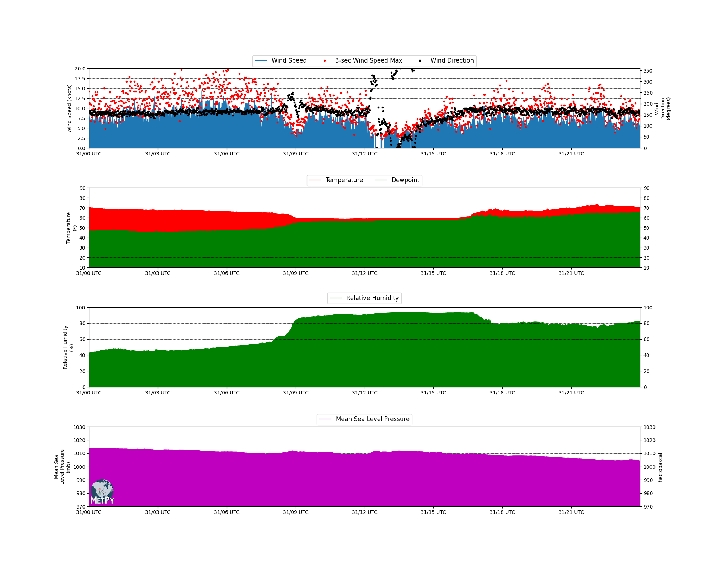

Note
Click here to download the full example code
Meteogram¶
Plots time series data as a meteogram.
Out:
/home/travis/virtualenv/python3.7.1/lib/python3.7/site-packages/pandas/plotting/_matplotlib/converter.py:103: FutureWarning: Using an implicitly registered datetime converter for a matplotlib plotting method. The converter was registered by pandas on import. Future versions of pandas will require you to explicitly register matplotlib converters.
To register the converters:
>>> from pandas.plotting import register_matplotlib_converters
>>> register_matplotlib_converters()
warnings.warn(msg, FutureWarning)
import datetime as dt
import matplotlib as mpl
import matplotlib.pyplot as plt
import numpy as np
from metpy.calc import dewpoint_from_relative_humidity
from metpy.cbook import get_test_data
from metpy.plots import add_metpy_logo
from metpy.units import units
def calc_mslp(t, p, h):
return p * (1 - (0.0065 * h) / (t + 0.0065 * h + 273.15)) ** (-5.257)
# Make meteogram plot
class Meteogram(object):
""" Plot a time series of meteorological data from a particular station as a
meteogram with standard variables to visualize, including thermodynamic,
kinematic, and pressure. The functions below control the plotting of each
variable.
TO DO: Make the subplot creation dynamic so the number of rows is not
static as it is currently. """
def __init__(self, fig, dates, probeid, time=None, axis=0):
"""
Required input:
fig: figure object
dates: array of dates corresponding to the data
probeid: ID of the station
Optional Input:
time: Time the data is to be plotted
axis: number that controls the new axis to be plotted (FOR FUTURE)
"""
if not time:
time = dt.datetime.utcnow()
self.start = dates[0]
self.fig = fig
self.end = dates[-1]
self.axis_num = 0
self.dates = mpl.dates.date2num(dates)
self.time = time.strftime('%Y-%m-%d %H:%M UTC')
self.title = 'Latest Ob Time: {0}\nProbe ID: {1}'.format(self.time, probeid)
def plot_winds(self, ws, wd, wsmax, plot_range=None):
"""
Required input:
ws: Wind speeds (knots)
wd: Wind direction (degrees)
wsmax: Wind gust (knots)
Optional Input:
plot_range: Data range for making figure (list of (min,max,step))
"""
# PLOT WIND SPEED AND WIND DIRECTION
self.ax1 = fig.add_subplot(4, 1, 1)
ln1 = self.ax1.plot(self.dates, ws, label='Wind Speed')
self.ax1.fill_between(self.dates, ws, 0)
self.ax1.set_xlim(self.start, self.end)
if not plot_range:
plot_range = [0, 20, 1]
self.ax1.set_ylabel('Wind Speed (knots)', multialignment='center')
self.ax1.set_ylim(plot_range[0], plot_range[1], plot_range[2])
self.ax1.grid(b=True, which='major', axis='y', color='k', linestyle='--',
linewidth=0.5)
ln2 = self.ax1.plot(self.dates, wsmax, '.r', label='3-sec Wind Speed Max')
ax7 = self.ax1.twinx()
ln3 = ax7.plot(self.dates, wd, '.k', linewidth=0.5, label='Wind Direction')
ax7.set_ylabel('Wind\nDirection\n(degrees)', multialignment='center')
ax7.set_ylim(0, 360)
ax7.set_yticks(np.arange(45, 405, 90), ['NE', 'SE', 'SW', 'NW'])
lns = ln1 + ln2 + ln3
labs = [l.get_label() for l in lns]
ax7.xaxis.set_major_formatter(mpl.dates.DateFormatter('%d/%H UTC'))
ax7.legend(lns, labs, loc='upper center',
bbox_to_anchor=(0.5, 1.2), ncol=3, prop={'size': 12})
def plot_thermo(self, t, td, plot_range=None):
"""
Required input:
T: Temperature (deg F)
TD: Dewpoint (deg F)
Optional Input:
plot_range: Data range for making figure (list of (min,max,step))
"""
# PLOT TEMPERATURE AND DEWPOINT
if not plot_range:
plot_range = [10, 90, 2]
self.ax2 = fig.add_subplot(4, 1, 2, sharex=self.ax1)
ln4 = self.ax2.plot(self.dates, t, 'r-', label='Temperature')
self.ax2.fill_between(self.dates, t, td, color='r')
self.ax2.set_ylabel('Temperature\n(F)', multialignment='center')
self.ax2.grid(b=True, which='major', axis='y', color='k', linestyle='--',
linewidth=0.5)
self.ax2.set_ylim(plot_range[0], plot_range[1], plot_range[2])
ln5 = self.ax2.plot(self.dates, td, 'g-', label='Dewpoint')
self.ax2.fill_between(self.dates, td, self.ax2.get_ylim()[0], color='g')
ax_twin = self.ax2.twinx()
ax_twin.set_ylim(plot_range[0], plot_range[1], plot_range[2])
lns = ln4 + ln5
labs = [l.get_label() for l in lns]
ax_twin.xaxis.set_major_formatter(mpl.dates.DateFormatter('%d/%H UTC'))
self.ax2.legend(lns, labs, loc='upper center',
bbox_to_anchor=(0.5, 1.2), ncol=2, prop={'size': 12})
def plot_rh(self, rh, plot_range=None):
"""
Required input:
RH: Relative humidity (%)
Optional Input:
plot_range: Data range for making figure (list of (min,max,step))
"""
# PLOT RELATIVE HUMIDITY
if not plot_range:
plot_range = [0, 100, 4]
self.ax3 = fig.add_subplot(4, 1, 3, sharex=self.ax1)
self.ax3.plot(self.dates, rh, 'g-', label='Relative Humidity')
self.ax3.legend(loc='upper center', bbox_to_anchor=(0.5, 1.22), prop={'size': 12})
self.ax3.grid(b=True, which='major', axis='y', color='k', linestyle='--',
linewidth=0.5)
self.ax3.set_ylim(plot_range[0], plot_range[1], plot_range[2])
self.ax3.fill_between(self.dates, rh, self.ax3.get_ylim()[0], color='g')
self.ax3.set_ylabel('Relative Humidity\n(%)', multialignment='center')
self.ax3.xaxis.set_major_formatter(mpl.dates.DateFormatter('%d/%H UTC'))
axtwin = self.ax3.twinx()
axtwin.set_ylim(plot_range[0], plot_range[1], plot_range[2])
def plot_pressure(self, p, plot_range=None):
"""
Required input:
P: Mean Sea Level Pressure (hPa)
Optional Input:
plot_range: Data range for making figure (list of (min,max,step))
"""
# PLOT PRESSURE
if not plot_range:
plot_range = [970, 1030, 2]
self.ax4 = fig.add_subplot(4, 1, 4, sharex=self.ax1)
self.ax4.plot(self.dates, p, 'm', label='Mean Sea Level Pressure')
self.ax4.set_ylabel('Mean Sea\nLevel Pressure\n(mb)', multialignment='center')
self.ax4.set_ylim(plot_range[0], plot_range[1], plot_range[2])
axtwin = self.ax4.twinx()
axtwin.set_ylim(plot_range[0], plot_range[1], plot_range[2])
axtwin.fill_between(self.dates, p, axtwin.get_ylim()[0], color='m')
axtwin.xaxis.set_major_formatter(mpl.dates.DateFormatter('%d/%H UTC'))
self.ax4.legend(loc='upper center', bbox_to_anchor=(0.5, 1.2), prop={'size': 12})
self.ax4.grid(b=True, which='major', axis='y', color='k', linestyle='--',
linewidth=0.5)
# OTHER OPTIONAL AXES TO PLOT
# plot_irradiance
# plot_precipitation
# set the starttime and endtime for plotting, 24 hour range
endtime = dt.datetime(2016, 3, 31, 22, 0, 0, 0)
starttime = endtime - dt.timedelta(hours=24)
# Height of the station to calculate MSLP
hgt_example = 292.
# Parse dates from .csv file, knowing their format as a string and convert to datetime
def parse_date(date):
return dt.datetime.strptime(date.decode('ascii'), '%Y-%m-%d %H:%M:%S')
testdata = np.genfromtxt(get_test_data('timeseries.csv', False), names=True, dtype=None,
usecols=list(range(1, 8)),
converters={'DATE': parse_date}, delimiter=',')
# Temporary variables for ease
temp = testdata['T']
pres = testdata['P']
rh = testdata['RH']
ws = testdata['WS']
wsmax = testdata['WSMAX']
wd = testdata['WD']
date = testdata['DATE']
# ID For Plotting on Meteogram
probe_id = '0102A'
data = {'wind_speed': (np.array(ws) * units('m/s')).to(units('knots')),
'wind_speed_max': (np.array(wsmax) * units('m/s')).to(units('knots')),
'wind_direction': np.array(wd) * units('degrees'),
'dewpoint': dewpoint_from_relative_humidity((np.array(temp) * units.degC).to(units.K),
np.array(rh) / 100.).to(units('degF')),
'air_temperature': (np.array(temp) * units('degC')).to(units('degF')),
'mean_slp': calc_mslp(np.array(temp), np.array(pres), hgt_example) * units('hPa'),
'relative_humidity': np.array(rh), 'times': np.array(date)}
fig = plt.figure(figsize=(20, 16))
add_metpy_logo(fig, 250, 180)
meteogram = Meteogram(fig, data['times'], probe_id)
meteogram.plot_winds(data['wind_speed'], data['wind_direction'], data['wind_speed_max'])
meteogram.plot_thermo(data['air_temperature'], data['dewpoint'])
meteogram.plot_rh(data['relative_humidity'])
meteogram.plot_pressure(data['mean_slp'])
fig.subplots_adjust(hspace=0.5)
plt.show()
Total running time of the script: ( 0 minutes 0.998 seconds)